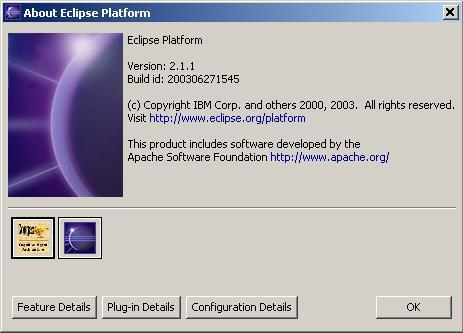

Installing CougaarIDE
NOTE:
As CougaarIDE is comprised of a number of Plugins for Eclipse, you will
need to install the Eclipse SDK before attempting to run CougaarIDE.
Step 1: Obtain a CougaarIDE Distribution
You can build a distribution of
CougaarIDE from source, or you can download a binary file release
from Cougaar
Forge.
Step 2: Unzip the CougaarIDE Distribution
Use a Zip-compatible program to unzip the distribution to the directory
you installed Eclipse into.
IMPORTANT: The distribution contains an "eclipse" directory with
"plugins" and "features" sub-directories. You must unzip into the
directory that contains "eclipse" for your install. (e.g. "C:\ Program
Files").
Step 3: Restart Eclipse
You should be prompted to OK the installation of the CougaarIDE feature
and its plugins; say ok.
Step 4: Verify the Feature is installed
Click the Help menu, and select "About Eclipse Platorm". You
should see the Cougaar IDE feature icon, and if you click on it, you
should be able to see all the plugins installed by it.
